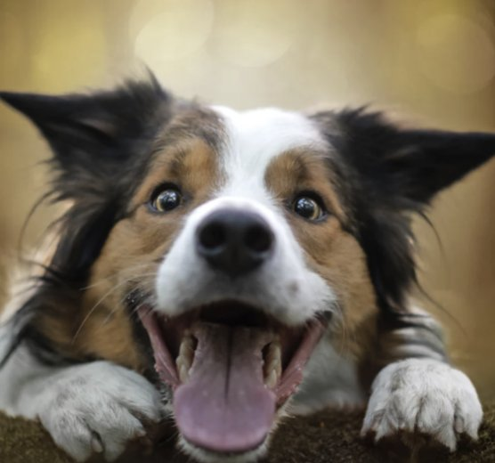
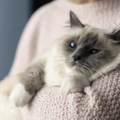
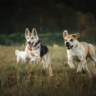
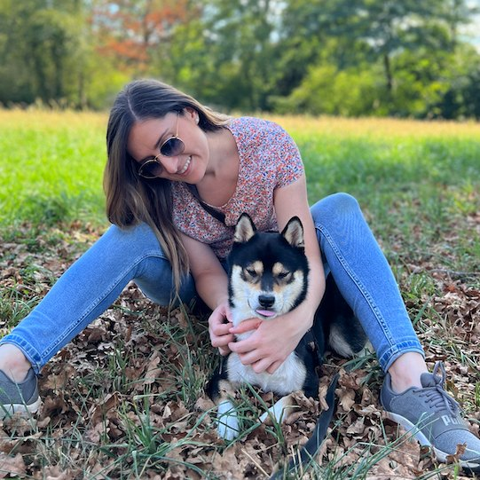

Animaux apaisés
Il garde sa maison, ses odeurs et son rythme. Aucun déplacement, aucun stress.
Partez 100 % serein. Votre compagnon reste chez lui, dans ses habitudes, et je viens m’occuper de lui : repas, câlins, promenades. Vous recevez des photos et des nouvelles chaque jour.



Un loulou bien dans ses pattounes jusqu’à votre retour
Pas de transport, pas de pension, pas de nouvelles habitudes. Votre compagnon reste dans son environnement, et vous choisissez librement le nombre de visites et leur durée. Photos, vidéos, appel et compte rendu écrit : vous savez chaque jour que tout va bien.
Il garde sa maison, ses odeurs et son rythme. Aucun déplacement, aucun stress.
Une professionnelle de confiance s’occupe de votre compagnon comme du sien. Vous profitez vraiment de votre absence.
ACACED, formation en éducation canine et élevage, premiers secours animaliers et assurance RC.
Photos, vidéos, appel et compte rendu écrit : vous savez que tout va bien.
Vous choisissez le nombre de visites et leur durée. Je m’adapte à votre animal.
Écrivez-moi par SMS au 06 26 32 31 67 ou par e-mail.
Me contacter →
Diplômée de l’ACACED, formée à l’éducation canine et aux premiers secours animaliers.
Passionnée d’animaux depuis toujours, j’ai moi-même plusieurs compagnons. Je sais donc à quel point les faire garder pendant les vacances ou un imprévu peut être un vrai casse-tête.
J’ai créé le service que j’aurais aimé trouver : une garde sur mesure, chez vous, qui perturbe le moins possible votre animal. Très exigeante quand je fais garder les miens, je le suis tout autant avec les vôtres. Leur bien-être passe avant tout.
Pour votre petit toutou
Calme, baladeur ou sportif ? Choisissez la formule qui lui ressemble : je viens le nourrir, le câliner et le promener, en ville, au bois de Pau ou en forêt. Prix par jour. Le déplacement est offert pour la première visite seulement (rencontre et signature du contrat), jusqu’à 4 km de Pau.
Il préfère le canapé aux grandes balades : de petites sorties de quartier lui suffisent.
Il adore se promener et a besoin d’une bonne balade pour se dégourdir les pattounes.
Il a besoin de se dépenser chaque jour dans de grands espaces.
Visites régulières, demi-journée privatisée… Parfait pour les chiens qui supportent mal la solitude ou qui ont tendance à faire des bêtises. Devis gratuit.
Composez vos journées comme vous voulez, par exemple 8h30 et 15h le lundi, 10h et 17h30 le mardi. Choisissez la distance entre chez vous et Pau :
| Durée de la visite | 1 visite/jour | 2 visites/jour | 3 visites/jour |
|---|---|---|---|
| 30 min | 14 € | 26 € | 40 € |
| 1 h | 20 € | 38 € | 58 € |
| Durée de la visite | 1 visite/jour | 2 visites/jour | 3 visites/jour |
|---|---|---|---|
| 30 min | 20 € | 32 € | 46 € |
| 1 h | 26 € | 44 € | 64 € |
| Durée de la visite | 1 visite/jour | 2 visites/jour | 3 visites/jour |
|---|---|---|---|
| 30 min | 28 € | 40 € | 54 € |
| 1 h | 34 € | 52 € | 72 € |
Pour votre matou
Les chats détestent changer d’endroit. Le vôtre reste tranquillement chez lui : je passe le nourrir, m’occuper de sa litière et le câliner. Prix par jour. Le déplacement est offert pour la première visite seulement (rencontre et signature du contrat), jusqu’à 4 km de Pau.
Un peu craintif, il aime les câlins… de loin, et préfère être seul.
Il vit en appartement, il est affectueux et a besoin de présence.
Il sort à sa guise. Même s’il n’est pas là à mon passage, je m’assure de le voir pendant votre absence.
Choisissez la distance entre chez vous et Pau :
| Durée de la visite | 1 visite/jour | 2 visites/jour | 3 visites/jour |
|---|---|---|---|
| 20 min | 10 € | 18 € | 28 € |
| 30 min | 12 € | 22 € | 34 € |
| 1 h | 18 € | 34 € | — |
| Durée de la visite | 1 visite/jour | 2 visites/jour | 3 visites/jour |
|---|---|---|---|
| 20 min | 16 € | 24 € | 34 € |
| 30 min | 18 € | 28 € | 40 € |
| 1 h | 24 € | 40 € | — |
| Durée de la visite | 1 visite/jour | 2 visites/jour | 3 visites/jour |
|---|---|---|---|
| 20 min | 24 € | 32 € | 42 € |
| 30 min | 26 € | 36 € | 48 € |
| 1 h | 32 € | 48 € | — |
Visites d’1 h : 2 par jour maximum.
Pas de soucis : à partir du deuxième animal, vous ne payez qu’un petit supplément.
Exemple : 1 visite de 30 min par jour pour 2 chats = 16 € au lieu de 24 €.
Rongeurs, oiseaux et poissons sont aussi les bienvenus, sur devis (pas de reptiles).
Une garde de votre animal sans stress et en toute confiance.
Par e-mail ou SMS écrit, avec votre animal (race, âge), la formule, les dates et votre adresse.
Je vous envoie un devis et on organise une première visite chez vous pour faire connaissance et signer le contrat. Elle est gratuite jusqu’à 4 km de Pau.
Un petit questionnaire pour bien connaître votre animal, puis vous me confiez un double des clés.
Je m’occupe de tout et vous envoie photos, vidéos et nouvelles chaque jour.
Quelques avis laissés sur Google par les familles des animaux gardés.
« Nous cherchions quelqu'un pour s'occuper de notre chatte Ori pendant nos déplacements professionnels et nos vacances et nous sommes tombés sur Alicia, dont les avis étaient très rassurants... et ils sont tout à fait fondés ! Elle est très sérieuse et douce, et on sent qu'elle aime profondément nos compagnons poilus. Elle a su apprivoiser notre Ori, qui peut parfois être un peu sélective dans ses contacts avec les humains. On part l'esprit tranquille à présent. N'hésitez pas à faire appel à Alicia ! »
« Je suis très satisfaite de mon expérience. Alicia est adorable, elle a pris soin de mon chien comme si c’était le sien. Elle m’envoyait des nouvelles à chaque passage. Je referais appel à elle dès que besoin. »
« Première fois que j'ose faire garder mes souris et laisser les clés à quelqu'un. J'en ai été ravie. Très sérieuse. Avec contrat et prise de notes pour les tâches à effectuer. Du coup j'ai pu partir deux fois cette année en vacances avec l'esprit tranquille. Je recommande à 100%. »
« Alicia est la nounou officielle de mes deux sacrés de Birmanie depuis plusieurs mois. Ils l’adorent et je sais que je peux partir serein si je dois m’absenter plusieurs jours. Je recommande à 200%, si vous souhaitez faire garder vos animaux, foncez les yeux fermés ! »
« Je recommande fortement les services d’Alicia qui est une personne formidable, sympathique, ponctuelle et très professionnelle. Alicia s’est occupée parfaitement de notre adorable Léon pendant notre absence et nous a envoyé des vidéos et photos quotidiennes. Nous referons appel à elle sans hésiter pour nos prochaines absences. »
« Alicia s'est occupée pendant 10 jours de mes 4 chats, je recommande vraiment pour sa gentillesse, sa disponibilité, mes chats étaient bien heureux de la voir tous les jours et moi d'avoir de leurs nouvelles quotidiennement. Vraiment parfait ! »
Chats, chiens et même un lapin : voici quelques-uns des compagnons dont je me suis occupée à Pau et aux alentours.
Je me déplace chez vous à Pau et dans toutes les communes à 12 km maximum.
Un doute sur votre zone ? Envoyez-moi un SMS ou un e-mail, je vous le confirme rapidement.
Garde de chien et de chat à domicile, visites et promenades à Pau et dans l’agglomération : Billère, Lons, Jurançon, Gelos, Bizanos, Idron, Mazères-Lezons. À l’ouest jusqu’à Lescar, Laroin, Artiguelouve, Poey-de-Lescar et Saint-Faust. Au nord à Montardon, Serres-Castet et Buros. À l’est à Morlaàs, Sendets, Ousse et Lée. Au sud à Gan, Rontignon, Uzos, Aressy, Narcastet, Meillon, Assat et Bosdarros.
Votre animal est gardé chez lui, par une professionnelle qualifiée et de confiance, avec un service adapté à ses besoins. Dans une pension il change de repères, et sur les plateformes de pet sitting les gardiens ne sont pas toujours qualifiés.
À Pau et dans un rayon de 12 km. Le déplacement est offert pour la première visite seulement (rencontre et signature du contrat), jusqu’à 4 km de Pau ; au-delà, les tarifs à la carte « 4-8 km » et « 8-12 km » s’appliquent. Voir les communes desservies.
Ajoutez simplement 4 € par chat supplémentaire et 8 € par chien supplémentaire.
Une prise en charge est possible dans certains cas, par exemple lors d’une hospitalisation. Renseignez-vous auprès de votre complémentaire santé.
Chèque, virement, espèces et PayPal.
Par e-mail à pattounechezsoi@gmail.com ou par SMS écrit au 06 26 32 31 67, en formulant clairement votre demande. WhatsApp est possible si vous êtes à l’étranger.
Oui : rongeurs, oiseaux et poissons, sur devis. Je ne garde pas les reptiles, qui ne sont pas dans mes compétences.
Par e-mail ou SMS écrit uniquement. Je vous réponds rapidement avec un devis et on fixe ensemble la première rencontre.
Écrivez-moi par SMS ou par e-mail, je vous réponds rapidement.
Précisez : nom et prénom, téléphone, animal (race et âge), formule, dates et adresse. Merci !
WhatsApp possible si vous êtes à l’étranger. Paiement par chèque, virement, espèces ou PayPal.